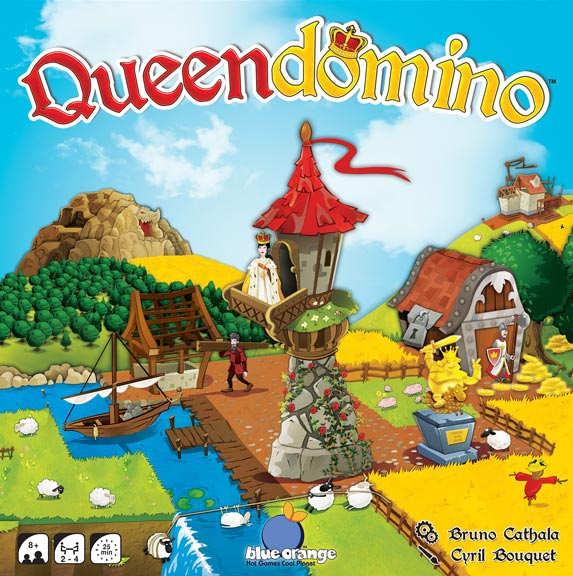
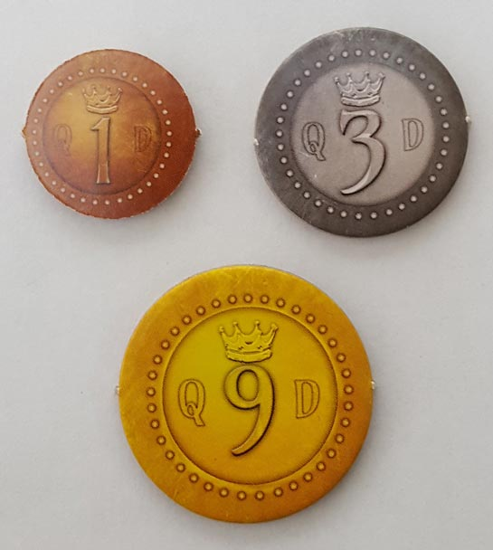
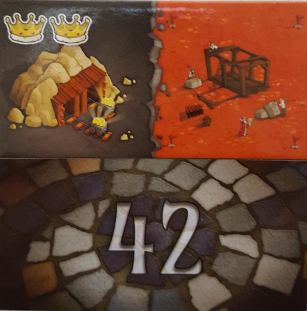
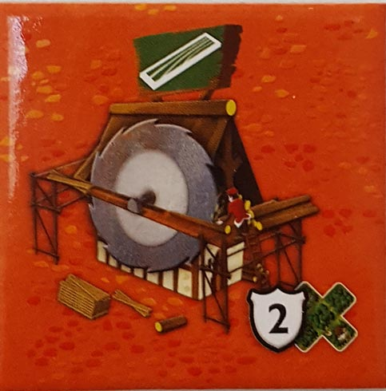
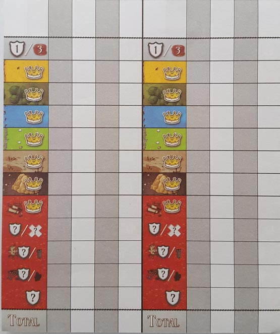
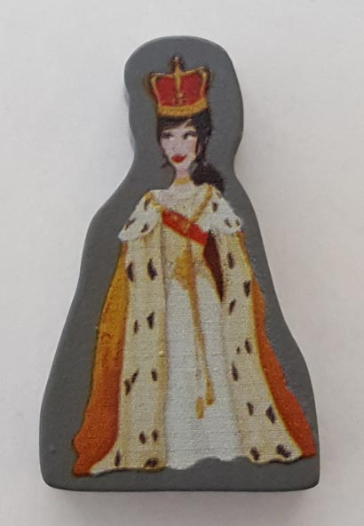
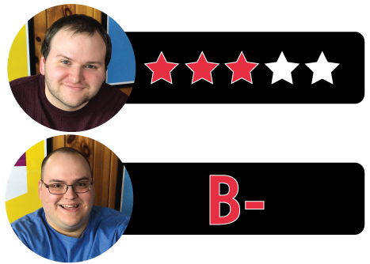

In this Queendomino review, we dive into the follow-up to Kingdomino, designed by Bruno Cathala and published by Blue Orange Games. Given the massive success of its predecessor, Queendomino had a lot to live up to. Does it match the simple, tile-drafting genius of Kingdomino, or does it try to do too much? There’s only one way to find out! Read on below for our thoughts on Queendomino.

D reviews Queendomino

(Author’s note: this review is meant to accompany our gameplay video and will not go in-depth on the game’s rules. If you’re interested in learning how the game is played, please watch the video. It’s not bad.)
If you’ve been reading our reviews here every week, then you’re already aware of my thoughts on Kingdomino, the game on which Queendomino builds. But for the uninitiated, I thought Kingdomino was a good, not spectacular, game that should provide some breezy fun for players of all ages. But it was perhaps a somewhat weak choice for the Spiel des Jahres award. So, this sequel, featuring the solid core gameplay of the original plus a host of new mechanics should be a clear improvement, right? Well, not so fast.
I’m not sure if I would go so far as to say that Queendomino is definitively worse than Kingdomino, but I’m reasonably confident in saying that I don’t like it more than the original release. The new rules include knights that are used to tax the land, buildings that can be built to gather resources and victory points, and the queen, who provides aid to the person she’s visiting. All of these mechanics make sense and work well together, but I’m not sure how well they work with Kingdomino. These new rules dominate the game, and focusing on them is somewhat necessary in order to win. In particular, the buildings provide a good half-dozen or so new ways to score points. Sadly, I don’t find any of them as engaging as the basic kingdom-assembly gameplay of the original. Queendomino sort of forgets about the domino part of the game, and I think that’s a shame.
Like the original game, the production quality of Queendomino is fine overall, featuring the same, colorful art by Cyril Bouquet on the tiles. The new components are all fine, although I wish the knights were a little bit larger. They’re shockingly tiny and more are included than I imagine would ever be necessary, but that’s a small quibble. The new scoring sheets that are included are nice and necessary, given how many ways to score there are now. The sheets are double-sided and the game provides you with a large pad, so you’ll be able to play this game for a good long while before you run out.
So, the verdict is pretty simple here. If you thought Kingdomino showed promise but needed a lot more to it, then this is probably the game for you. I’m of the opinion that Kingdomino did need something else to push it over-the-top. However, designer Bruno Cathala went too far with Queendomino, and this game has lost some of the simple charms of its predecessor. It’s also probably a little too complicated to appeal to Kingdomino’s younger fans. Personally, I’ll stick with the original.
D’s Rating: Three Stars out of Five.
Will reviews Queendomino
 Bruno Cathala can design the living hell out of a board game, and Kingdomino
will likely go down as one of his best. I certainly enjoy that game –
it’s quick, intuitive, and a lot of fun. It also won a boatload of
awards, so unsurprisingly, there was a lot of demand for a sequel or
expansion. Thus, we were gifted with Queendomino, a sequel that
also acts as an expansion, so it’s really the best of both worlds, or
is it? The answer depends on whether or not you felt that Kingdomino could use some extra mechanics, but some other factors should be considered as well.
Bruno Cathala can design the living hell out of a board game, and Kingdomino
will likely go down as one of his best. I certainly enjoy that game –
it’s quick, intuitive, and a lot of fun. It also won a boatload of
awards, so unsurprisingly, there was a lot of demand for a sequel or
expansion. Thus, we were gifted with Queendomino, a sequel that
also acts as an expansion, so it’s really the best of both worlds, or
is it? The answer depends on whether or not you felt that Kingdomino could use some extra mechanics, but some other factors should be considered as well.
For starters, the components and artwork are both top notch, so no different than Kingdomino. In fact, I would go as far to say that Cyril Bouquet’s art is better this time around, given that Queendomino adds the town tiles, which are a bit busier than the tiles in the first game. There are simply more components in this game, which means that the artist had more to do, and the effort shows. And as with any Blue Orange game, the components feel higher end quality-wise, which is what I’ve come to expect from the publisher.
In Kingdomino, the gameplay felt as polished and self-explanatory as you can get, so figuring out how to add to that formula must’ve been difficult. But as I said before, Bruno Cathala can really design board games, and Queendomino is very good. Unfortunately, I don’t think I like it as much as Kingdomino for one simple reason – the new mechanics don’t improve the experience. This is due to the town tiles, which are basically a new kind of tile that require buildings to be built and coin to pay for them. Once the building is paid for, you can place it on the town tile and collect the special benefits of said tile, such as a new tower or knight. The towers attract the Queen pawn, which earns you discounts on future buildings, and the knights allow you to “tax” certain territories.
Do you see what I mean yet? Having to briefly explain these new mechanics required more thought from me than was required to learn the entirety of Kingdomino. Now I’ll admit, the town tiles, buildings, knights, and towers all forced me to consider more when playing, which I suppose is a plus. Kingdomino bordered on being too easy, and in truth, Queendomino isn’t that difficult to learn. Still, these new additions don’t actually add that much entertainment to the proceedings, and in many ways, they detract from the core experience. By including the town tiles, Bruno was forced to remove many of the original forest, mine, and other base game tile types. This means that there are fewer opportunities to collect crown squares for the specific territories you’re targeting. In the end, the best – and potentially only – path to victory is to focus on the town tiles and the bonuses they provide. I definitely didn’t expect or appreciate that.
Maybe I need to play Queendomino more because so far, the appeal of the new gameplay is lost on me. Now, I know that this game also serves as an expansion for Kingdomino, and I imagine that’s the best way to play it. At least that way, there will be the proper amount of variety and opportunity in regards to the tile-drafting. As it is though, Queendomino is an inferior tabletop game to Kingdomino, the fact of which is somewhat disappointing. However, I did enjoy my time with it enough that I’m more than willing to give it another shot, and I do believe there are some redeeming qualities hidden in there somewhere.
I give Queendomino a: B-
Looking back on it, it appears I also gave Kingdomino a B-, but given how I feel about it now, I’d probably up that to a B or even a B+. I really like that game.
Queendomino Review – Board Crazy’s Ratings

Leave a Reply
You must be logged in to post a comment.